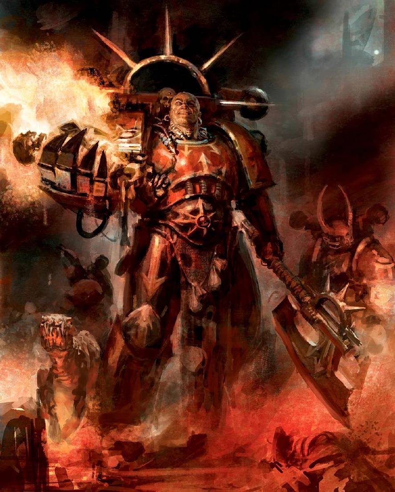
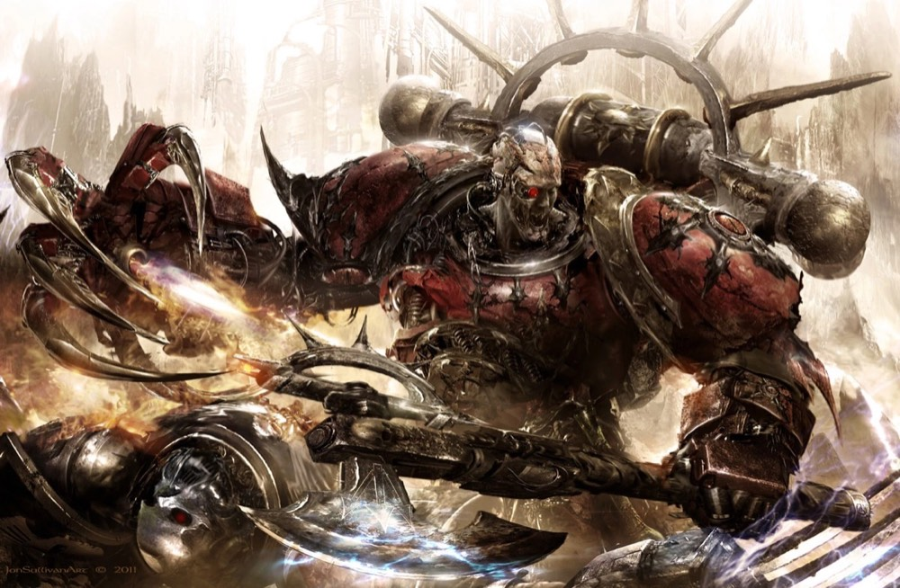

Huron Blackheart
| Huron Blackheart | |
|---|---|
| The Tyrant of Badab, Lord of the Maelstrom | |
 Huron Blackheart at the head of the Red Corsairs, from an Ordo Malleus plate Artwork © Games Workshop | |
| Master of the Red Corsairs | |
| Reign | 912.M41 – present |
| Predecessor | Position established |
| Successor | Incumbent |
| Chapter Master of the Astral Claws | |
| Tenure | 715.M41 – 912.M41 |
| Predecessor | Rovik Blake |
| Successor | None (Chapter declared Traitoris) |
| Lord of Badab Primaris | |
| Tenure | c. 715–912.M41 (estimated) |
| Predecessor | Unrecorded |
| Successor | Unrecorded |
| Born | Early M41 (date and world expunged) |
| Wounded | 912.M41, at the Palace of Thorns, by Captain Zhrukal Androcles |
| Status | Active; ruling the Maelstrom from the Corsair's Keep |
| Allegiance | Imperium of Mankind (to 901.M41); renegade; Chaos Undivided |
| Other titles | The Blood Reaver; Lord of the Maelstrom |
| Wargear | The Tyrant's Claw; a power axe; the Hamadrya (familiar); formerly the Ghost Razors |
| Known for | The Badab War (901–912.M41); founding the Red Corsairs; capturing Roboute Guilliman (999.M41–000.M42) |
Huron Blackheart, once Lugft Huron (also recorded as Lufgt Huron), is a renegade Space Marine and the master of the Red Corsairs, the largest pirate power of the Maelstrom. As Chapter Master of the Astral Claws and lord of Badab Primaris he was a celebrated defender of the Imperium's eastern marches, until his ambition and suspicion led him to lead the secession of the Badab Sector in 901.M41. The Badab War that followed lasted until 912.M41 and ended with his near death. He survived by a bargain with the Ruinous Powers, and has ruled the Maelstrom ever since.[1][2]
Half his body is bionic, and he is attended by a daemonic familiar, the Hamadrya. Huron honours the Chaos Gods without serving any one of them, and has so far kept his own will. Since the opening of the Great Rift in 999.M41 he has captured the primarch Roboute Guilliman for a time, invaded the White Scars' homeworld of Chogoris, and survived a challenge from his own lieutenant.[3][4]
Early life
[edit]Most of Huron's early life has been erased by the Inquisition. The records that survive show him as a Scout of the Astral Claws in the last stages of the Ribos Crusade (early M41, estimated). On the world of Lylogir he fought through psychic attacks to kill an Aeldari Warlock with his bare hands and save his squad. He served next in the Chapter's Devastator reserve, where he became known for his skill at plotting fields of fire, then in the Third Company and the First, where he rose over far older veterans. As Captain of the Fourth Company he defeated much larger enemy armies with new tactics of concentrated firepower, and gathered a following that made some in the Chapter uneasy.[1]
In 715.M41 Chapter Master Rovik Blake was killed fighting the Ork warboss Vorg Manburna, and Huron was elected to succeed him.[1][a]
The Tyrant of Badab
[edit]
As Chapter Master, Huron led the Maelstrom Warders, the Chapters that guarded the Maelstrom. He destroyed Ork invasions, and his defence of Khirab (mid-M41, date unrecorded) made him a hero to the people of the Endymion Cluster. He also became lord of Badab Primaris and the dominant power in the sector. As conditions in the Maelstrom worsened, he grew paranoid and distanced himself from Terra. He began to keep the sector's tithes for its own defence and petitioned for more Chapters and a new Founding under his command.[1]
In 901.M41 he destroyed an Imperial investigation fleet sent to Badab. The Executioners, Lamenters and Mantis Warriors joined his secession, and the Imperium sent loyal Chapters against him. The war is described in the article Badab War. In 912.M41 the loyalists stormed the Palace of Thorns on Badab Primaris, and Huron was struck down by a melta blast from Captain Zhrukal Androcles of the Star Phantoms, who was dying. The blast destroyed the right side of his body. The surviving Astral Claws carried him into the Maelstrom.[1]
Blackheart
[edit]In the Maelstrom, Lord Apothecary Garreon and Forge Master Valthex rebuilt Huron with bionics. Imperial savants hold that he would not have lived if he had not made a bargain with the powers of the warp while he lay between life and death. When he woke he was accompanied by the Hamadrya, a small creature of unknown nature that gives him psychic powers and is said to read the minds of those around him, which has saved him from many assassins. He took the name Blackheart and renamed his warriors the Red Corsairs (912.M41).[2]
Over the following century Huron built the largest pirate fleet in the eastern Imperium. He took in renegade Astartes from every Chapter, killed the Salamanders Chapter Master Neh'Tar in 938.M41, and raided across the Segmentum Ultima. Before the Thirteenth Black Crusade (c. 999.M41), Abaddon the Despoiler gave him a Blackstone Fortress, which he named Corsair's Keep, in return for alliance with the Black Legion.[2]
Era Indomitus
[edit]
In the Terran Crusade (999.M41–000.M42) Huron's lieutenant Verngar, aided by the daemon Kairos Fateweaver, captured Guilliman and his flagship Macragge's Honour and held them aboard Corsair's Keep. Cypher and the Harlequins freed most of the prisoners, and Huron blamed Verngar for the loss.[3]
Huron then led the Red Corsairs against Chogoris and the Yasan Sector (999.M41–early M42). On Chogoris Verngar tried to usurp him with the relic called the Ebon Talon. Huron cut off the hand that held it, refused the relic's temptation and gave it to Valthex for safe keeping. The Corsairs captured and tortured the White Scars' Chapter Master Jubal Khan and held many worlds for a time, but were driven back.[4]
Later in the Era Indomitus (early M42, dates unrecorded) Typhus defeated Huron in a duel atop the Endless Spire on Danasar, while the warp storm Fomori engulfed that world, and left him alive. Huron has since fought Tyranid splinters in the Maelstrom, raided the Crimson Eyrie against Yriel, and opposed the Black Legion during the Arks of Omen (c. M42).[2][3]
Character and abilities
[edit]Huron is a gifted strategist, a master of fire support and an exceptional duellist. He is proud, vengeful and convinced that the Imperium betrayed him, and he presents his realm as one where the strong prosper free of weak old men. He uses the Chaos Gods as he uses his allies, and avoids lasting obligation to any of them.[2]
Wargear
[edit]- The Tyrant's Claw: a huge bionic power fist with a built-in heavy flamer, part of his rebuilt body.
- A power axe.
- The Hamadrya: his daemonic familiar.
- Before 912.M41: Terminator armour, an artificer heavy flamer and the lightning claw called the Ghost Razors.
- Vessels: the battle barge Spectre of Ruin and the Blackstone Fortress Corsair's Keep. His followers also gave him an Imperial Knight, Little Huron, stolen from House Terryn.
Timeline
[edit]| Date | Event |
|---|---|
| Early M41 (estimated) | Scout in the Ribos Crusade; kills a Warlock on Lylogir |
| 715.M41 | Becomes Chapter Master of the Astral Claws |
| 901.M41 | Destroys an Imperial fleet; Badab War begins |
| 912.M41 | Wounded at the Palace of Thorns; flees into the Maelstrom; becomes Huron Blackheart |
| 938.M41 | Kills Neh'Tar of the Salamanders |
| c. 999.M41 | Receives Corsair's Keep from Abaddon |
| 999.M41–000.M42 | Guilliman held captive aboard Corsair's Keep |
| 999.M41–early M42 | War for Chogoris; Verngar's challenge |
| Early M42 | Defeated by Typhus on Danasar |
See also
[edit]Notes
[edit]- ^ The accepted date is 715.M41. An older Imperial record gives 697.M41, and the two dates appear in the same archive; the later date is the one used in the Chapter's own rolls.
References
[edit]- ^ a b c d e Brooks, Mike. Huron Blackheart: Master of the Maelstrom (novel). Black Library, Chs. 3-4, 17-19, Cover Art. Codex Heretic Astartes - Chaos Space Marines (8th Edition), pp. 51, 87, 122. Games Workshop.
- ^ a b c d e Codex Heretic Astartes - Chaos Space Marines (8th Edition) (Revised Codex), pg. 52. Games Workshop. Codex: Death Guard (8th Edition), pg. 22. Games Workshop.
- ^ a b c Codex Supplement: White Scars (8th Edition), pg. 34. Games Workshop. Cawkwell, Sarah. The Gildar Rift (novel). Black Library.
- ^ a b Dembski-Bowden, Aaron. Blood Reaver (novel). Black Library. Clapham, Mark. Tyrant of the Hollow Worlds (novel). Black Library.